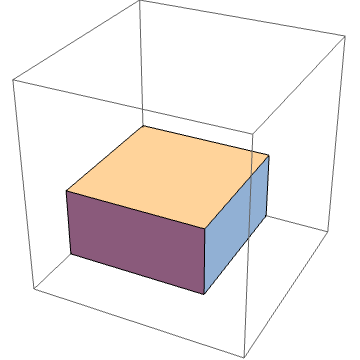

Multi-objective Hypervolume-based Ant Colony Optimizer (MHACO)#
New in version 2.11.
-
class maco#
- 
Multi-objective Hypervolume-based Ant Colony Optimizer (MHACO) is a modified version of GACO for multi-objective optimization, based on the hypervolume measure. It extends the basic ideas of GACO by making use of hypervolume computation for ranking the individuals and storing them inside a solution archive from which future generations of individuals will be generated. In particular, the algorithm combines the concept of non-dominated fronts and hypervolume computation for ranking the individuals.
The paper that introduces MHACO: “MHACO: a Multi-Objective Hypervolume-Based Ant Colony Optimizer for Space Trajectory Optimization” by Giacomo Acciarini, Dario Izzo, Erwin Mooij (https://ieeexplore.ieee.org/document/9185694).
Image credit: https://sites.psu.edu/paretomusings/2015/02/27/generating-data-sets-of-arbitrary-dimension-with-known-hypervolume/.
This constructor will construct MHACO.
-
maco(unsigned gen = 100u, unsigned ker = 63u, double q = 1.0, unsigned threshold = 1u, unsigned n_gen_mark = 7u, unsigned evalstop = 100000u, double focus = 0., bool memory = false, unsigned seed = pagmo::random_device::next())#
- Parameters
gen – number of generations to evolve.
ker – number of solutions stored in the solution archive (which is maintained independently from the population).
q – this parameter is called convergence speed parameter, and it is useful for managing the convergence speed towards the best found solution (in terms of non-dominated front and hypervolume value). The smaller the parameter, the faster the convergence and the higher the chance to get stuck to local minima.
threshold – when the generations reach the threshold, then q is set to 0.01 automatically, thus increasing consistently the convergence speed towards the best found value.
n_gen_mark – this parameter regulates the convergence speed of the standard deviation values.
evalstop – if a positive integer is assigned here, the algorithm will count the runs without improvements (in terms of ideal point), if this number will exceed the evalstop value, the algorithm will be stopped and will return the evolved population until that moment.
focus – this parameter makes the search for the optimum greedier and more focused on local improvements (the higher the greedier). If the value is very high, the search is more focused around the currently found best solutions.
memory – memory parameter. If true, memory is activated in the algorithm for multiple calls.
seed – seed used by the internal random number generator (default is random).
- Throws
std::invalid_argument – if focus < 0.
std::invalid_argument – if threshold < 1, or threshold > gen, when gen!=0 and memory is set to false.
std::invalid_argument – if threshold < 1, when gen!=0 and memory is set to true.
-
population evolve(population pop) const#
Algorithm evolve method: evolves the population for the requested number of generations.
- Parameters
pop – population to be evolved.
- Returns
evolved population.
- Throw
std::invalid_argumentifpop.get_problem()is stochastic, single objective or has non linear constraints. If the population size is smaller than the ker value or if the population is empty.
-
void set_seed(unsigned seed)#
Sets the seed.
- Parameters
seed – the seed controlling the algorithm stochastic behaviour.
-
unsigned get_seed(unsigned seed)#
Gets the seed.
- Returns
the seed controlling the algorithm stochastic behaviour.
-
void set_verbosity(unsigned level)#
Sets the algorithm verbosity: sets the verbosity level of the screen output and of the log returned by
get_log(). level can be: - 0: no verbosity. - >0: will print and log one line each level generations. Example (verbosity 1, where Gen, is the generation number, Fevals the number of function evaluations used; also, the ideal point of the current population follows cropped to its 5th component):
1Gen: Fevals: ideal1: ideal2: ideal3: ideal4: ideal5: ... : 2 1 0 0.125887 0.125978 0.126125 0.13308 0.128715 3 2 20 0.125887 0.125978 0.126125 0.13308 0.128715 4 3 40 0.125887 0.125978 0.126125 0.13308 0.128715 5 4 60 0.125887 0.125978 0.126125 0.13308 0.128715 6 5 80 0.125887 0.125978 0.126125 0.13308 0.128715 7 6 100 0.125887 0.125978 0.126125 0.13308 0.128715 8 7 120 0.0994166 0.101595 0.106296 0.107823 0.11469 9 8 140 0.125887 0.125978 0.126125 0.13308 0.128715 10 9 160 0.125887 0.125978 0.126125 0.13308 0.128715 11 10 180 0.0837379 0.0837666 0.0837977 0.0839922 0.0845042
-
unsigned get_verbosity() const#
Gets the verbosity level.
- Returns
the verbosity level.
-
unsigned get_gen() const#
Gets the generations.
- Returns
the number of generations to evolve for.
-
const log_type &get_log() const#
Gets the log. A log containing relevant quantities monitoring the last call to evolve. Each element of the returned
std::vectoris amaco::log_line_typecontaining: Gen, Fevals, ideal_point as described inmaco::set_verbosity.- Returns
an
std::vectorofmaco::log_line_typecontaining the logged values Gen, Fevals, ideal_point.
-
void set_bfe(const bfe &b)#
Sets the batch function evaluation scheme.
- Parameters
b – batch function evaluation object.
-
std::string get_extra_info() const#
Extra info. Returns extra information on the algorithm.
- Returns
an
std::stringcontaining extra info on the algorithm.
-
std::string get_name() const#
Returns the problem name.
- Returns
a string containing the problem name: “MHACO: Multi-objective Hypervolume-based Ant Colony Optimization”.
-
maco(unsigned gen = 100u, unsigned ker = 63u, double q = 1.0, unsigned threshold = 1u, unsigned n_gen_mark = 7u, unsigned evalstop = 100000u, double focus = 0., bool memory = false, unsigned seed = pagmo::random_device::next())#
{kind=link}